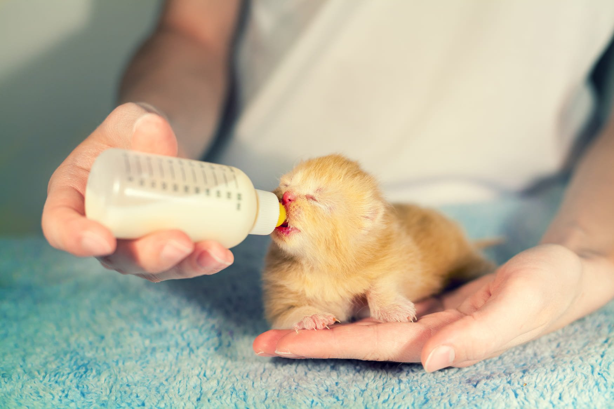
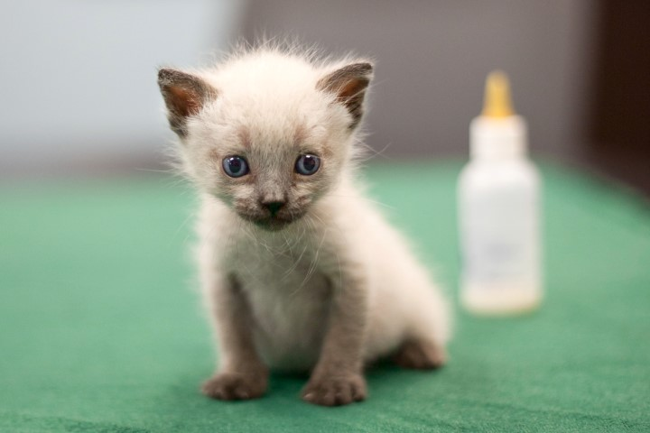
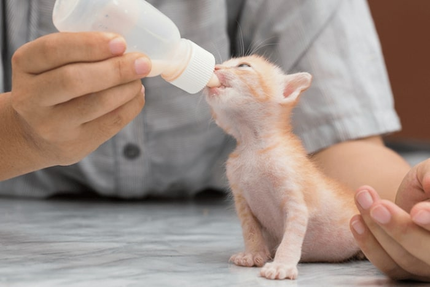
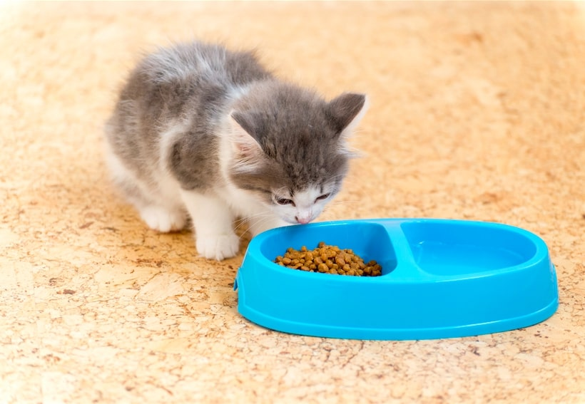
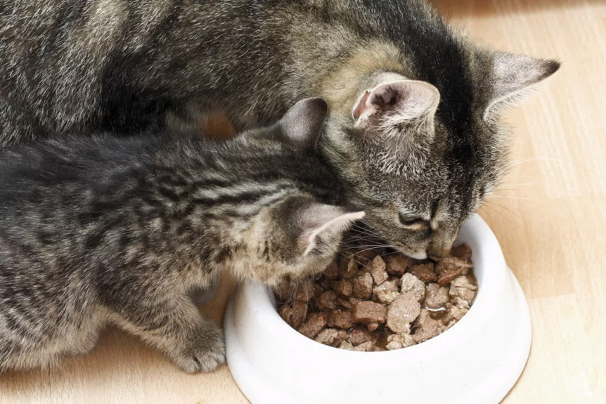

دادن غذای بچه گربه تازه متولد شده و چند روزه تا غذای اون در سن دو ماهگی تا سنین بالاتر همه و همه نیاز به داشتن اطلاعات درست دارن تا گربه نوزادتون سالم بمونه و بیمار نشه. اینکه بدونیم بچه گربه چی میخوره و چه غذایی میتونیم به بچه گربه بدیم، از اولین و مهمترین نکاتیه که برای نگهداری از اونا نیاز هست بدونیم.
خیالت راحت، ما این راهو بلدیم و توی این مقاله پت پرس از تغذیه گربه در چند روز اول زندگیش شروع میکنیم و بهتون میگیم غذای بچه گربه چیست و کلی اطلاعات درباره شیر دادن به بچه گربه و نحوه تغذیه اون در سنین مختلف رو باهم بررسی میکنیم. با وبسایت حیوانات خانگی پت پُرس همراه باشید:
غذای بچه گربه چند روزه
مهم ترین نکته در نگهداری از بچه گربه چند روزه، غذای اون هست.
غذای بچه گربههای نوزاد از روزی که به دنیا میان و هنوز چشم هاشون باز نشده شیر مادرشون هست و بدن اونها فقط توانایی هضم شیر گربه رو داره. اما در صورتی که بچه گربه به مادرش دسترسی نداشته باشه، ما برای نگهداری از اون باید جواب سه سوال مهم رو بدونیم:
- چه شیری برای بچه گربه مناسبه؟
- بچه گربه چقدر شیر میخوره؟
- بچه گربه تا کی شیر میخوره؟

به بچه گربه چه نوع شیری بدهیم؟
خب همونطور که گفتیم شیر مناسب برای بچه گربهها، شیر مادرشونه ولی اگه یه گربه کوچولوی چند روزه پیدا کردیم که مادر هم نداره، اون موقع باید به بچه گربه چی بدیم؟ تو این مواقع باید برای غذای بچه گربه از شیر خشک مخصوص بچه گربه استفاده کنین.
برای تغذیه بچه گربه بی مادر با شیر خشک، طبق دستور روی بسته شیر خشک، روزانه مقدار مورد نظر رو با آب مخلوط کنین و با استفاده از شیشه شیر به بچه گربه بدین. (مطلب مرتبط: شیر برای گربه)
نکته مهم! شاید برای شما هم سوال پیش اومده باشه که میشه به بچه گربه شیر گاو داد؟ در جواب باید بهتون بگیم شیر گاو برای بچه گربه اصلا مناسب نیست! چون میتونه باعث اسهالش بشه. اگر برای پیدا کردن شیر خشک بچه گربه دچار مشکل شدین، میتونین به عنوان یک راه حل موقت (نهایتا ۱ روزه) از فرمول زیر استفاده کنین:  تا الان فهمیدیم که غذای مناسب برای بچه گربه تازه متولد شده، شیر خشک مخصوص بچه گربه یا شیر مادر هست ولی یه سوالی که ممکنه برای خیلی از ما صاحبان گربه پیش اومده باشه اینه که هر چند ساعت باید به بچه گربه شیر داد؟
بچه گربهها تا ۱ ماهگی فقط شیر مادر میخورن. میتونین از حدود ۳ هفتگی تا ۱ ماهگی کم کم غذای مخصوص برای بچه گربه زیر ۲ ماه رو وارد رژیم غذاییاش کنین. ممکنه یک بچه گربه یتیم بشه یا به هر علتی نتونه شیر مادرشو بخوره. اینجاست که باید نحوه شیر دادن به بچه گربه چند روزه رو بلد باشیم. اول از همه باید بگم که شیر گاو برای بچه گربهها خوب نیست و باید شیر خشک مخصوص بهشون بدین. اگه حیوون خونگی دیگه هم دارین بهتره یک لباس مخصوص بچه گربه داشته باشین تا موقع غذا دادن و دست زدن بهشون این لباس رو بپوشین، وگرنه ممکنه بیماری از حیوونای دیگه بهشون منتقل بشه. همیشه قبل و بعد از شیر دادن به بچه گربه دستهای خودتونو بشورین. میتونین دستکش هم بپوشین.
شیشه شیرهای مخصوصی برای بچه گربهها هست که مثلا سرشیشههاش باریک و بلند و به اندازه دهن این حیووناست. بچه گربه رو توی زاویه درست بگیرین و بعد بطری شیر رو وارونه کنین تا یک قطره ازش بیرون بیاد. بعد سرشیشه رو توی دهن بچه گربه بذارین و آروم جلو و عقب ببرین یا یک ذره به دو طرف تکون بدین تا تشویق به مکیدن بشه. اگه نشد، چند دقیقه صبر کنین و دوباره امتحان کنین. اگه بازم شیر نخورد پشت یا پیشانیشو آروم نوازش کنین. این کار شبیه زمانیه که گربه مادر بچههاشو تمیز میکنه و ممکنه بچه گربه رو تشویق به شیر خوردن کنه. اگه این کلک هم جواب نداد، یک خورده شربت ذرت روی لبهای حیوون بمالین. از غذای خانگی برای بچه گربه یک ماهه به بعد فقط میشه استفاده کرد. البته مهمترین نکتهای که لازمه بهش دقت کنید، بالانس بودن غذاست.
میشه تو خونه برای بچه گربهها غذا درست کرد، ولی این کار مشکل و زمانبره و به دقت زیادی هم احتیاج داره وگرنه ممکنه حیوون دچار سوء تغذیه بشه. توی این قسمت دستور غذای خانگی موقتی براتون پیشنهاد میکنیم که مختص برای بچه گربه دوماهه و با وزن دوکیلویی هست و بخاطر همین ۱۰۰% بالانس شده نیست و نباید به عنوان غذای روزمره ازش استفاده بشه. بهتره برای یه برنامه غذایی کاملا بالانس شده و مختص به گربهی خودتون با متخصصان تغذیه پت پرس ارتباط بگیرین. مواد لازم: طرزتهیه:
البته توصیه پت پرس استفاده از غذای خونگی بالانس شده و مخصوص گربه خودتونه که توسط دامپزشک تغذیه پیشنهاد میشه. بالانس کردن خوراک بچه گربهها کار راحتی نیست، چون باید نیازهای غذایی گربه (مانند میزان پروتئین، چربی، اسیدهای آمینه، ویتامین ها، کلسیم و فسفر و …) دقیق محاسبه بشه و بر اساس اینکه در کدام ماده غذایی چه میزان پروتئین و … هست، به یک دستور غذای بالانس شده برسیم. حالا که بالانس کردن رژیم غذایی بچه گربهها انقدر سخته، چاره چیه؟ خیالت راحت، ما این راهو بلدیم. دامپزشکان تغذیه تیم پت پرس کار رو برای شما راحت کردن. کافیه ویژگی های غذای بچه گربتون رو به ما بدید تا ما براش یک رژیم غذایی بالانس شده بنویسیم تا مطمئن باشید همه مواد غذایی به اندازه به بدنش میرسه. دوست داری از تیم تغذیه پت پرس برای گربه ات برنامه غذایی خونگی بگیری؟ کافیه از طریق باکس زیر درخواستت رو ثبت کنی و اطلاعات گربهات وارد کنی. بعدش دامپزشکای پت پرس با توجه به وضعیت فعلی گربه شما براش برنامه غذایی تدوین میکنن. مقدار غذای بچه گربه بستگی به وزنش داره. قانون کلی اینه که بچه گربهها باید هر روز به ازای هر ۳۰ گرم وزن بدنشون حدود ۸ میلی لیتر شیر بخورن، البته توی چندین وعده. بچه گربههای نوزاد تا یک هفتگی باید هر دو سه ساعت یک بار غذا بخورن و بعد از اون میشه هر ۴ تا ۶ ساعت بهشون غذا بدیم. بچه گربههایی که کوچیکتر یا ضعیفترن ممکنه تو هر وعده غذای کمتری بخورن و لازم باشه که تعداد وعدهها رو بالاتر بیرین تا به اون فرمول ۸ میلیلیتر به ازای هر ۳۰ گرم برسین. شیر خوردن بیش از حد میتونه باعث اسهال بشه. شکم بچه گربهای که خوب غذا خورده باید گرد باشه، اما سفت و ورم کرده نباشه. ( مطلب مرتبط: غذا دادن به گربه ) نحوه غذا دادن به بچه گربه از سه هفتگی شروع به تغییر میکنه و غذا باید از حدود ۳ هفتگی وارد رژیم گربتون کنین، برای این کار از غذای خشک مخصوص برای اونا یا پوچهای مخصوص استفاده کنین. فقط حواستون باشه که این پوچ و کنسروها مخصوص بچه گربههای زیر ۲ ماه باشن چون بیشتر غذاهای بچه گربه یا kitten از ۲ ماهگی به بعد قابل استفاده هستن. احتمالا این سوال براتون پیش اومده که بچه گربه از چه سنی غذا میخوره. خب البته منظور غذاهایی غیر از شیره، یعنی غذای جامد. غذای جامد رو میشه از ۳ تا ۴ هفتگی به گربهها داد. حواستون به مدفوع حیوون باشه. اگه شل شده بود غذای کنسروی رو کم کنین و به دستگاه گوارش بچه گربهتون فرصت بدین تا به غذای جدید عادت کنه. هرچی مقدار غذای کنسروی بیشتر میشه باید آب بیشتری به شیر خشک اضافه کنین. مثلا در مورد شیر خشک KMR، برای هر پیمانه شیر خشک به جای ۲ پیمانه ۳ یا ۴ پیمانه آب بریزین. بعد از این که بیشتر غذای بچه گربه از نوع کنسروی شد، باید همیشه یک کاسه آب تازه هم برای حیوون بذارین. از این زمان دیگه میتونین غذای خشک رو هم به رژیم غذایی اضافه کنین. یکم مخلوط شیر خشک و آب رو به غذای خشک اضافه کنین تا بچه گربهها به خوردنش تشویق بشن. بعدا کم کم غذا رو خشکتر درست کنین تا بالاخره به غذای کاملا خشک عادت کنن. باز هم مراقب مدفوعشون باشین که اسهال یا یبوست نگیرن. غذای بچه گربه زیر ۲ ماه در برخی برندهای معروف : رویال کنین: mother and baby یا pediatric weaning  از ۱ ماهگی تا ۲ ماهگی رژیم غذایی بچه گربه شما باید غذای خشک مخصوص برای بچه گربه ۱ ماهه به همراه شیر خشک باشه. هرگز غذای گربه رو ناگهانی تغییر ندین. این تغییرات باید همیشه تدریجی باشن. تغییر غذای بچه گربه از شیرخشک به غذای بچه گربه به این صورته که از ۵ وعده در طول روز (هر ۵ ساعت) شروع میکنین و در سه تا چهار هفتگی ۱ وعده غذا و ۴ وعده شیر به گربه نوزاد میدین. این وعده های غذا باید کم کم به سمت بیشتر شدن پیش بره: از ۲ ماه به بعد گربه نوزاد شما آماده برای خوردن غذای خشک آماده است. دقت کنین که بچه گربهها چون در حال رشد هستن به غذای مخصوصی احتیاج دارن و نیازهای غذاییشون با گربه های بالغ متفاوته برای همین باید حتما حتما از غذای خشک مخصوص برای بچه گربه به همراه پوچ یا کنسرو بچه گربه استفاده کنن. در انتهای ۲ ماهگی وعده های غذایی رو از ۵ وعده به ۴ وعده برسونین و به میزان دستورالعمل روی بسته غذای خشک به گربه غذا بدین. ۳ ماهگی رو با ۴ وعده غذای خشک در طی ۲۴ ساعت شروع کنین و با ۳ وعده تموم کنین. از ۶ ماهگی که گربه شروع به بالغ شدن میکنه، باید فقط ۲ وعده در روز سر ساعت معین غذا بخوره. برای نگهداری از گربه باید نکات زیادی رو مد نظر قرار بدیم، البته اگر قرار باشه این کار رو بدون عیب و نقص انجام بدیم! مشکل اینجاست که ما هیچ منبعی نداریم که بهمون اصول نگهداری از بچه گربه و گربههای بالغ رو یاد بده و بهمون بگه چه موقع چه کارهایی رو انجام بدیم و همه اطلاعاتی که داریم غیردقیق، ناقص و پراکنده هستن. برای همین تیم پت پرس تصمیم گرفته کتابی مصور برای شما گربهدارهای عزیز طراحی و تولید کنه. کتاب الکترونیکی راهنمای نگهداری و تربیت گربه برای پاسخ به سوالات بالا و صدها سوال مهم دیگه که برای همه صاحبان گربه پیش میاد، توسط تیم پت پرس نوشته شده. اطلاعاتی که در کتاب نگهداری، تربیت و خوشحال کردن گربه پیدا میکنید اطلاعات به روزی هستن که گربه دار ها ازش غافلن. این کتاب ۱۸۴ صفحه داره و میتونین در قالب یک فایل PDF دریافتش کنید.  معمولا گربههای ضعیف یا مریض ممکنه بیاشتها هم بشن، و موقعی که این اتفاق میفته به حمایت تغذیهای احتیاج پیدا میکنن. چه زمانی بچه گربهها به حمایت تغذیهای نیاز دارن؟ اگه گربهتون خودش میتونه غذا بخوره، سعی کنین با گرم کردن مقدار کمی از یک غذای خیلی خوش طعم، به غذا خوردن تشویقش کنین. اگه نشد باید با دست یا سرنگ بهش غذا بدین. ولی در مورد غذا دادن با سرنگ به بچه گربه خیلی باید مرافب باشید که غذا داخل ریه نره. اگه این روشها جواب نداد، ممکنه دامپزشک داروهای محرک اشتها رو براش تجویز کنه. اگه باز هم مشکل حل نشد باید از لولهگذاری استفاده کرد. یک لوله نازک لاستیکی یا سیلیکنی رو از سوراخ بینی گربه وارد مریش میکنن. بعد غذا رو (معمولا یک غذای کنسروی پر کالری که کاملا له و با آب مخلوط شده و تا حد دمای اتاق گرمش کردن)، با سرنگ توی این لوله میریزن. خلاصه اینجوری به بدن گربه غذا میرسونن تا زمانی که دوباره اشتهاش برگرده و قوت بگیره.
گاهی وقتا ممکنه لازم باشه که لوله رو از راه گردن وارد مری کنن یا روی شکم یک برش کوچیک ایجاد بشه و مستقیم لوله رو وارد معده یا حتی روده کنن. تو بعضی موارد هم مجبورن غذا رو به شکل سرم داخل رگ تزریق کنن. حواستون باشه که توی خونه اینکار رو به هیچ عنوان نباید انجام بدین، حتی اگه در مورد لوله گذاری برای انسان تجربه دارین، هم نباید اینکار رو بکنین چون ساختار بدنی گربهها خیلی حساسه و به راحتی میتونین با این کار بهش آسیب بزنین. شرکت هیلز غذاهای مخصوصی به اسم Hill’s Prescription Diet a/d برای تقویت حیوونای ضعیف میسازه که با مشورت دامپزشک میشه ازشون استفاده کرد. غذای Hill’s a/d برای گربهها یا سگهایی که بیماریهای شدید، تصادف یا جراحی داشتن و خیلی ضعیف هستن تهیه شده (مدل Feline برای گربههاست). این غذای خوشطعم مقدار مناسبی از پروتئین و چربی (از جمله اسیدهای چرب امگا ۳) داره وهمینطور آمینو اسیدهای شاخهدار داخلش هست که به بهبود زخم، حفظ توده عضلانی بدن و تقویت سیستم دفاعی خیلی کمک میکنن. علاوه بر اینا گلوتامین زیادی هم داره که تو عملکرد متابولیک روده کوچیک موثره و ممکنه سیستم ایمنی رو هم تحریک کنه. آنتی اکسیدانهای این غذا از سلولها در مقابل رادیکالهای آزاد محافظت میکنن و باعث تقویت سیستم ایمنی میشن. وقتی Hill’s a/d رو هم بزنیم نرمتر میشه و به همین خاطر میتونیم برای تغذیه با کاسه، قاشق، سرنگ یا لوله ازش استفاده کنیم. البته این غذا برای گربههایی که به بعضی بیماریها (مثلا آنسفالوپاتی کبدی یا پانکراتیت) مبتلا باشن، مناسب نیست و در کل فقط باید طبق دستور دامپزشک ازش استفاده کرد. بعضی از مواد تشکیل دهنده Hill’s a/d ایناست: جگر بوقلمون، جگر خوک، گوشت مرغ، قلب بوقلمون، آرد ذرت، روغن ماهی، کربنات کلسیم، تری پلی فسفات سدیم، کلرید پتاسیم، سیترات پتاسیم، دی کلسیم فسفات، صمغ گوار، تورین، انواع ویتامینها، کلرید کولین و مواد معدنی مختلف، به اضافه اسانس تخم مرغ و اسانس جگر مرغ به عنوان طعم دهنده.
نگهداری از گربه پرشین کمی با گربههای دیگه متفاوته. غذای گربه پرشین هم باید فاکتورهایی داشته باشه که اون رو با غذای گربه های دیگه متفاوت کرده. برندهایی مانند رویال کنین غذای بچه گربه نژاد پرشین رو به صورت جداگانه تولید کردن که بد نیست اگر گربه نوزاد نژاد پرشین دارین بهش اون غذا رو بدین. البته ضروری هم نیست! بچه گربههای پرشین هم میتونن تا وقتی بالغ بشن از غذای بچه گربههای دیگه استفاده کنن. ولی اگر دوست دارین غذای خشک مخصوص برای توله گربه پرشین به گربتون بدین، میتونین از لینک زیر غذای رویال کنین مخصوص بچه گربه پرشین رو تهیه کنین: به بچه گربه خیابانی چه غذایی بدهیم؟ اگه یه بچه گربه خیابانی پیدا کردین و دوست دارین ازش داخل خونه نگهداری کنین، همه نکاتی که در بالا گفتیم رو همچنان باید براش رعایت کنین. بچه گربههای خیابانی تا قبل از ۶ ماهگی بسیار آسیب پذیر هستن و بهتره ازشون داخل منزل نگهداری کنین. اونا تا قبل از ۳ ماهگی نمیتونن بیرون از خونه تنهایی دووم بیارن. 
غذای خشک ایرانی برای بچه گربهها توصیه نمیشه زیرا فرمول این غذاها مشخص نیست و در طولانی مدت به کبد و کلیه آسیب میزنه. خوشحال میشیم نظرات و تجربیات خودتون رو در مورد غذای بچه گربه در قسمت نظرات با ما درمیون بگذارین. منابع:
بچه گربه چقدر شیر میخوره؟
بچه گربه تا چند ماهگی شیر مادر میخورد؟
چگونه به بچه گربه شیر بدهیم؟

شیر دادن به بچه گربهها با بطری
غذای خانگی برای بچه گربه
غذای خانگی برای بچه گربه دو ماهه
حالا بیاین ببینیم چطور میشه برنامه غذایی بچه گربه را بالانس کرد؟
سفارش آسان از طریق اپلیکیشن پت پرس

میزان غذای بچه گربه در روز
بچه گربه از چند ماهگی غذا میخورد؟
غذای بچه گربه یک ماهه
غذای بچه گربه دو ماهه
غذا فقط یکی از فاکتورهای مهم در نگهداری از گربه است
تقویت بچه گربه ضعیف
اما چه غذایی برای تقویت حیوون ضعیف خوبه؟
غذای بچهی پرشین کت
غذا برای بچه گربههای خیابانی
جمع بندی و نتیجه گیری
سلام من بچه گربه پیدا کردم که نمیدونم چند ماهه است و در جای که زنده گی میکنیم هیچ اهمیت برای گربه داده نمیشه و به همین خاطر غذا بچه گربه هم پیدا نمیشه و شیر بیدون لیکتوز را هم پیدا نتوانستم و دو روز میشه به غیر از آب چیزی نخورده نمیفهمم چی کنم میشه رهنمایی کنید ممنون
سلام محمد عزیز،
چاره ای نیست جز اینکه غذای موقتی ای که در همین مقاله ذکر شده (شامل شیر، تخم مرغ و …) برای بچه گربه شیرخوار و اگه سنش بیشتره میتونین ترکیبی از مرغ، برنج پخته، هویج یا سیب زمینی بدین بهش.
اگه تشخیص سنش براتون مهمه میتونین عکس از دندوناش برامون از طریق مشاوره آنلاین بفرستین تا سنشو تشخیص بدیم:
با مشاوره دامپزشکی آنلاین کنار شما هستیم (سوال مستقیم و تخصصی از دامپزشکان پت پرس)
سلام و خسته نباشید
من حدود دوروز پیش یه گربه ی چهار روزه از بیرون پیدا کردم و اوردمش خونه تا ازش نگه داری کنم شیر خشک مخصوص و جای مخصوصش روهم تهیه کردم اما نمیدونم چطوری تمیزش کنم یعنی دلم نمیاد ببرمش حموم چون احساس میکنم هنوز خیلی کوچیکه و مریض میشه. ممنون میشم اگر راهنمایی کنین
سلام ترنم جان،
بچه گربه ها نیازی به حمام ندارن و اصلا توصیه نمیشه چون نمیتونن دمای بدنشون رو تنظیم کنن. نحوه دستشویی گرفتنش رو میتونین از این مقاله دنبال کنین:
قدم به قدم نگهداری از بچه گربه ۱ روزه تا ۱ ماهه (چطوری بچه گربه ها را زنده نگه داریم؟)
سلام.گربه من پرشینه، ٧ ماهشه اصلاً غذا نمیخوره حتی غذای خشکش، بزور یه کم از توو دستم بهش غذا میدم میخوره، چیکار کنم گربم اشتهاش خوب شه و با حرص غذا بخوره
سلام رها جان
غذای خشکش رو با کنسرو گربه یا بستنی مخصوص گربه قاطی کنین چون دوست دارن و غذاشون رو بیشتر میخورن.
سلام
من چهار هفته پیش یه گربه باردار که درد زایمان داشت اوردم توپارکینگ بهش جا و غذا دادم شش تا بچه داره الان که نزدیکه به یک ماهشون هست مادره هر روز بهش غذای خشک و تر میدم. میخوام بدونم ایا بچه ها رو مادر خودش بعد از شیر گرفتن تغذیه میکنه؟ یا رهاشون میکنه؟ بچه ها از کی نیاز به عذا به جز شیر مادر دارند؟ و اینکه من هدفم نگه داشتن بچه ها نیست میخوام بعد از اینکه به غذا بیفتند و تسلط به راه رفتن داشته باشند، بروند، من باید کاری کنم برای رفتنشون یا خودشون میرن؟ یعنی میخوام به زندگی طبیعی خودشون برگردند، میشه منو در این مورد راهنمایی کنید، ممنونم
سلام مونا جان،
ممنون از حسن نیتتون.
خیر بهشون یاد میده که مثل خودش دنبال غذا بگردن. بچه گربه ها از همون حدود ۲ ماهگی که مادرشون از شیر میگیرتشون میتونن کم کم عادت داده بشن به خوردن غذاهای دیگه. چون منبع اصلی غذاییشون الان شما هستین همشون همونجا میمونن. مگه اینکه یا کلا غذارسانیشون رو قطع کنین، یا به جایی غیر از ساختمون منتقل کنین یا اینکه در حدی وعده هایی غذایی که شما میدین کم باشه که مجبور باشن یاد بگیرن جاهای دیگه هم دنبال غذا برن.
سلام من یه بچه گربه دو ماهه دارم غذای خشک بهش میدم خوب. میخوره ولی بلد نیست از توی ظرف ابش اب بخوره و گاهی محبورم با سرنگ بهش اب بدم چیکار باید. بکنم یاد. بگیره اب بخوره از ظرف؟
سلام سارا جان،
سعی کنین ترغیبش کنین از آب جاری مثل آب شیر آب بخوره. آبخوریای اتومات هم براشون وجود داره اگه امکانشو دارین تهیه کنین. معمولا وقتی آب داخل ظرفشون هم تازه ی تازه نباشه زیاد رغبت ندارن بخورن ازش.
سلام.من از سه تا بچه گربه ۴ماهه به همراه مادرشون نگهداری میکنم که هنوز از مادرشون شیر میخورن.ولی اخیرا متوجه شدم که انگار مادرشون باز هم حاملس و شکمش بزرگ شده. خواستم بدونم ممکنه گربه ای با اینکه هنوز به بچه هاش شیر میده حامله باشه؟
سلام مهتاب جان،
اگه مجدد فحل شده باشه میتونه باردار شده باشه. دوره شیردهی گربه ها اکثر اوقات ۲ ماهه هست و بعدش بچه هارو از شیر میگیرن و میتونن درصورت فحلی مجدد باردار بشن.
سلام من یک شب ی گربه اومد تو حیاطمون منم بهش غذا دادم دیگه هرروز میومد الان بچه هاشو اورده بهشون فقط ماست میدم و چهارتابچش هم ماست میخورن هم شیر مادرشون یکی از بچه هاش امروز بالا اورد احساس میکنم بخاطره اینه که خیلی بهشون ماست دادم چه چیزی به خودش و بچه هاش بدم؟؟💖💖
سلام زهرا جان،
چون گربه خونگی نیستن دلایل متعددی میتونه باعث استفراغش شده باشه ولی ماست و شیر هم میتونن تاثیر داشته باشن. درصورت امکان شیر یا ماست بدون لاکتوز بهشون بدین احتمال زیاد مشکلی براشون پیش نمیاد. غذای خشک هم میتونین بدین یا حتی غذای خونگی. این مقاله میتونه درباره غذای خونگی کمکتون کنه:
راهنمای تهیه غذای خانگی برای گربه
سلام من دوتا بچه گربه از گل خانه
پیدا کردم که نمیدونستم چند ماهه هستن چهار تا بودن ولی صاحب گلخانه گفت دوتا شو ببر که زود نمیرن و دوتا شم خودم نگه میدارم الان از وقتی که
اوردمشون یک ماه گذشته و بزرگم شدن
من بهشون استخون مرغ که کمی هم گوشت داره میپزم میدم و تخم مرغ آبپز
و شیر بعضی موقع هم نمیخورن من باید بهشون از این به بعد چی بدم که بخورن تو مقالتون گفتین که غذای مخصوص بدیم و اینکه نباید ادویه و پیاز بخورن چیکار کنم؟
سلام آیلار جان،
استخون مرغ غذای مناسبی نیست و لازمه جایگزینش کنین. اگه شیر هم میخواین بدین ترجیحا بدون لاکتوز باشه که مشکلات گوارشی پیدا نکنن. غذای خشک مخصوص میتونین بدین ولی اگه با هزینش مشکل دارین میتونین کامل غذاشونو ببرین سمت خونگی و مواد معدنی و ویتامینشونو با قرص مولتی ویتامین و مکملا (بسته به نظر پزشکش) تامین کنین. همکارمون میتونن برای برنامه غذای خونگی اصولی کمکتون کنن:
دریافت برنامه و دستور غذای خانگی گربه از دامپزشک (با توجه به ویژگی های گربه)
سلام من یه بچه گربه پیدا کردم اونو تو حیاط گذاشتم از قبل یه گربه مادر تو حیاطمون بود که بچه ها شو تازه از شیردادن گرفته متوجه شدم داره نزدیک بچه گربه میشه و یه صدای عجیبی از خودش درمیاره منم ترسیدم نکنه بچه گربمو بخوره بچه گربمو اوردم یه جای امن این رفتار گربه مادر نشانه چیه ایا امکانش هس که بهش شیر بده یا میخواد بخوردش؟
سلام مهتاب جان،
اگه مادر گربه از قبل اونجا بوده حیاط رو قلمرو خودش میدونه و صرفا میخواست دفاع کنه. یا اینکه چون بچه هاش رو هم از شیر گرفته معمولا اون موقع بچه گربه هارو پس میزنن که دوباره نخوان شیر بخورن. دلایل مختلفی میتونه وجود داشته باشه بسته به عکس العمل مادر به بچه گربه ی شما.
ببخشید ها دکتر ولی من این جریان برام اتفاق افتاده و گربه اومد و بچه گربه رو خفه کرد!
سلام سعید عزیز،
اگه مطمئنین گربه ماده بوده درصورتی به بچه گربه آسیب میزنن که بچه ی خودشون نباشه (گربه ی نر هم اینکارو انجام میده) یا اگه هم باشه مجبوره برای زنده نگه داشتن بچه های دیگش ناچارا ضعیف ترین بچشو قربانی میکنه تا انرژی و موادمغذی رو دریافت کنه.
سلام من تو کامنت پایینی گفتم که وقتی بدنشو شستم پر حشره بود واسه اونا چیکار کنم چجوری از بین ببرمشون؟
سلام آسیه جان،
بسته به سنش درمانای متفاوتی رو میشه اعمال کرد. اطلاعات بیشترش رو در اختیار پزشکش بذارین یا در مشاوره آنلاین برامون بفرستین تا بتونیم راهنماییتون کنیم:
با مشاوره دامپزشکی آنلاین کنار شما هستیم (سوال مستقیم و تخصصی از دامپزشکان پت پرس)